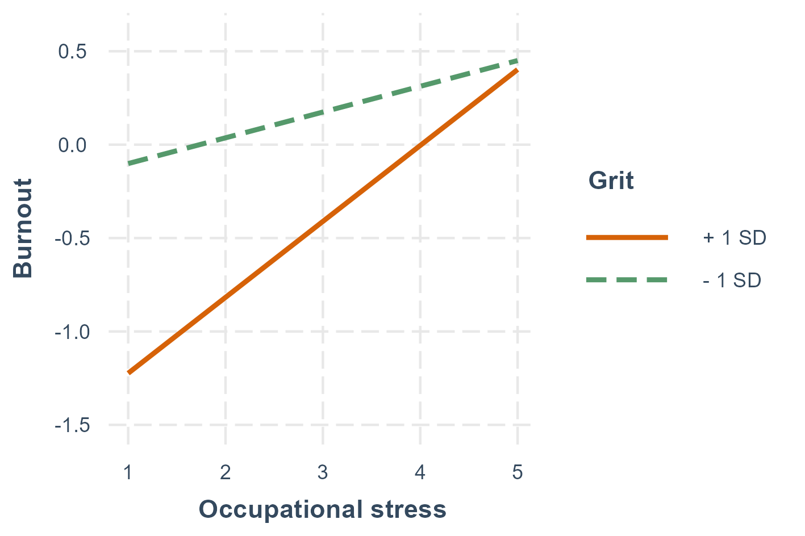
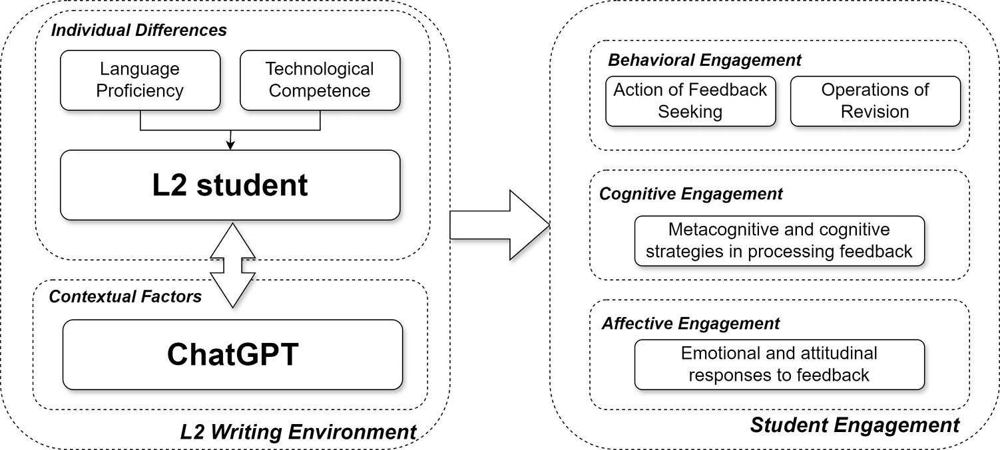
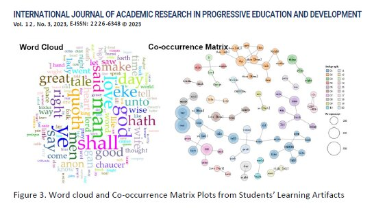

Da "Alex" Yan , Ph. D.
Da "Alex" Yan(闫 达), PhD, works on assessment and feedback, translation studies, and educational application of (Gen)AI.
He has been teaching in Xinyang Agriculture and Forestry University since 2013. His research interests include language learning; formative assessment; professional translation/interpreting; and human-computer interaction.
Bio:
I hold a Ph.D. degree in Translation (2022–2025) from University of Science, Malaysia (USM).
With over a decade of teaching experience at
Xinyang Agriculture and Forestry University (XYAFU),
I played a key role in establishing the university's Bachelor of Translation and Interpreting (BTI) program.
I have taught core courses such as Introduction to Translation, Basic and Advanced Interpreting, and Computer-Assisted Translation.
I have served as the principal investigator or main contributor for 12 social science research projects, focusing on translation and educational practices.
I have published 16 peer-reviewed papers and received several teaching awards, including the second prize in the Central China Translation Technology Teaching Competition.
In addition to my academic work, I have provided interpreting services for several international events, including the International Tea Culture Festival and foreign cooperation projects with local governments and universities.
I also review for mutiple international journals.
Publications
*Representative papers are highlighted below.
Automated feedback complements online dialogic peer feedback: Fostering L2 writers’ feedback quality and self-regulatory writing strategy use
Da Yan, Chenjin Jia, Feng Tian
Interactive Learning Environments, 2025
Web view / Postprint archive /
Da Yan, Chenjin Jia, Feng Tian
Interactive Learning Environments, 2025
Web view / Postprint archive /
@article{yan2025ile,
author = {Da Yan and Chenjin Jia and Feng Tian},
title = {Automated feedback complements online dialogic peer feedback: Fostering L2 writers’ feedback quality and self-regulatory writing strategy use},
booktitle = {Interactive Learning Environments},
year = {2025},
}
Occupational stress and turnover intentions among simultaneous interpreters: the mediating role of burnout and the moderating role of grit
Da Yan, Chenjin Jia
Perspectives: Studies in Translation Theory and Practice, 2025
Web view / Postprint archive /
Da Yan, Chenjin Jia
Perspectives: Studies in Translation Theory and Practice, 2025
Web view / Postprint archive /
@article{yan2025pers,
author = {Da Yan and Chenjin Jia},
title = {Occupational stress and turnover intentions among simultaneous interpreters: the mediating role of burnout and the moderating role of grit},
booktitle = {Perspectives: Studies in Translation Theory and Practice},
year = {2025},
}Comparing individual vs. collaborative processing of ChatGPT-generated feedback: Effects on L2 writing task improvement and learning
Da Yan
Language Learning & Technology, 2024
Web view /
Da Yan
Language Learning & Technology, 2024
Web view /
@article{yan2024processing,
author = {Da Yan},
title = {Comparing individual vs. collaborative processing of ChatGPT-generated feedback: Effects on L2 writing task improvement and learning},
booktitle = {Language Learning & Technology},
year = {2024},
}
L2 writer engagement with automated written corrective feedback provided by ChatGPT: A mixed-method multiple case study
Da Yan, Shuxian Zhang
Humanities and Social Sciences Communications, 2024
Web view /
Da Yan, Shuxian Zhang
Humanities and Social Sciences Communications, 2024
Web view /
@article{yan2024engagement,
author = {Da Yan and Shuxian Zhang},
title = {L2 writer engagement with automated written corrective feedback provided by ChatGPT: A mixed-method multiple case study},
booktitle = {Humanities and Social Sciences Communications},
year = {2024},
}Rubric co-creation to promote quality, interactivity and uptake of peer feedback
Da Yan
Assessment & Evaluation in Higher Education, 2024
Web view / Postprint archive /
Da Yan
Assessment & Evaluation in Higher Education, 2024
Web view / Postprint archive /
@article{yan2024rubric,
author = {Da Yan},
title = {Rubric co-creation to promote quality, interactivity and uptake of peer feedback},
booktitle = {Assessment & Evaluation in Higher Education},
year = {2024},
}Feedback seeking abilities of L2 writers using ChatGPT: a mixed method multiple case study
Da Yan
Kybernetes, 2024
Web view / Postprint archive /
Da Yan
Kybernetes, 2024
Web view / Postprint archive /
@article{yan2024feedbackseeking,
author = {Da Yan},
title = {Feedback seeking abilities of L2 writers using ChatGPT: a mixed method multiple case study},
booktitle = {Kybernetes},
year = {2024},
}Status Quo of the Formative Assessment Enactments in Spoken Language Interpreter Training: A Scoping Review of Research and Practice
Da Yan, Shaidatul Kasuma, Mansour Amini
International Journal of Academic Research in Progressive Education and Development, 2023
Web view /
Da Yan, Shaidatul Kasuma, Mansour Amini
International Journal of Academic Research in Progressive Education and Development, 2023
Web view /
@article{yan2023status,
author = {Da Yan and Shaidatul Kasuma and Mansour Amini},
title = {Status Quo of the Formative Assessment Enactments in Spoken Language Interpreter Training: A Scoping Review of Research and Practice},
booktitle = {International Journal of Academic Research in Progressive Education and Development},
year = {2023},
}
Gender Difference in Digital Literacy Among Translation Trainees: Self-perceptions and Application Abilities
Da Yan, Shaidatul Kasuma, Mansour Amini
International Journal of Academic Research in Progressive Education and Development, 2023
Web view /
Da Yan, Shaidatul Kasuma, Mansour Amini
International Journal of Academic Research in Progressive Education and Development, 2023
Web view /
@article{yan2023gender,
author = {Da Yan and Shaidatul Kasuma and Mansour Amini},
title = {Gender Difference in Digital Literacy Among Translation Trainees: Self-perceptions and Application Abilities},
booktitle = {International Journal of Academic Research in Progressive Education and Development},
year = {2023},
}Impact of ChatGPT on learners in a L2 writing practicum: An exploratory investigation
Da Yan
Education and Information Technologies, 2023
Web view / Postprint archive /
Da Yan
Education and Information Technologies, 2023
Web view / Postprint archive /
@article{yan2023impactgpt,
author = {Da Yan},
title = {Impact of ChatGPT on learners in a L2 writing practicum: An exploratory investigation},
booktitle = {Education and Information Technologies},
year = {2023},
}The impact of Danmaku-based and synchronous peer feedback on L2 oral performance: A mixed-method investigation
Hualing Gong, Da Yan
Plos one, 2023
Web view /
Hualing Gong, Da Yan
Plos one, 2023
Web view /
@article{gong2023impactdanmaku,
author = {Hualing Gong and Da Yan},
title = {The impact of Danmaku-based and synchronous peer feedback on L2 oral performance: A mixed-method investigation},
booktitle = {Plos one},
year = {2023},
}Online informal learning community for interpreter training amid COVID-19: A pilot evaluation
Da Yan, Qiongqiong Fan
PLOS ONE, 2022
Web view /
Da Yan, Qiongqiong Fan
PLOS ONE, 2022
Web view /
@article{yan2022informal,
author = {Da Yan and Qiongqiong Fan},
title = {Online informal learning community for interpreter training amid COVID-19: A pilot evaluation},
booktitle = {PLOS ONE},
year = {2022},
}Teaching Data Science to Undergraduate Translation Trainees: Pilot Evaluation of a Task-Based Course
Da Yan, Junyue Wang
Frontiers in Psychology, 2022
Web view /
Da Yan, Junyue Wang
Frontiers in Psychology, 2022
Web view /
@article{yan2022datascience,
author = {Da Yan and Junyue Wang},
title = {Teaching Data Science to Undergraduate Translation Trainees: Pilot Evaluation of a Task-Based Course},
booktitle = {Frontiers in Psychology},
year = {2022},
}Cognitive Bases of Second Language Fluency, Norman Segalowitz (Ed.), Routledge, 2010, 258 pages, ISBN:978-0-8058-5662-0
Da Yan
Porta Linguarum, 2022
Web view /
Da Yan
Porta Linguarum, 2022
Web view /
@article{yan2022cognitive,
author = {Da Yan},
title = {Cognitive Bases of Second Language Fluency, Norman Segalowitz (Ed.), Routledge, 2010, 258 pages, ISBN:978-0-8058-5662-0},
booktitle = {Porta Linguarum},
year = {2022},
}The translation strategies for chinese diplomatic neologisms from the perspective of "political equivalence"
Mingxing Yang, Da Yan
Babel, 2016
Web view /
Mingxing Yang, Da Yan
Babel, 2016
Web view /
@article{yang2016translation,
author = {Mingxing Yang and Da Yan},
title = {The translation strategies for chinese diplomatic neologisms from the perspective of "political equivalence"},
booktitle = {Babel},
year = {2016},
}Conferences
L2 Writers' Feedback-Seeking from ChatGPT for Automated Written Corrective Feedback: Insights from a Multiple Case Study
6th International Postgraduate Colloquium (InPaC) 2023, 2023
Slides
6th International Postgraduate Colloquium (InPaC) 2023, 2023
Slides
L2 writer's feedback processing in the context of computer-mediated language learning
Post-Graduate Research Colloquium(PGRC 2023), 2023
Slides
Post-Graduate Research Colloquium(PGRC 2023), 2023
Slides

Gender Difference in Digital Literacy Among Translation Trainees
Asia Pacific Conference on Language and Gender 2022, 2022
Slides
Asia Pacific Conference on Language and Gender 2022, 2022
Slides